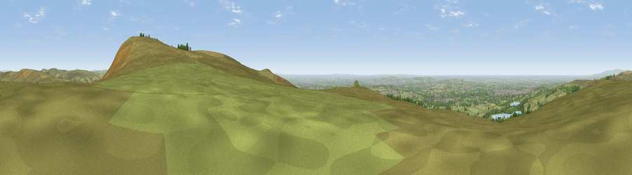

Noon Hill
#2943 in England · top 2% of its area beats it · near RivingtonWhere it is
The exact computed spot (SD 64694 14831). Click the marker for map links.
The view, rendered

A 360° render of this exact spot computed from the terrain model, tree cover and land cover — summer colours, afternoon light, calibrated against photographs of famous viewpoints. Real trees, hedges and buildings will differ in detail.
The panorama
Grey silhouette: terrain skyline in each direction (720 bearings, Earth curvature and refraction included). Dashed green: skyline with trees (+15 m) and buildings (+8 m) as obstacles. Blue strip: how far the ground is visible on each bearing.
Where the view opens
Wedge length = distance to the farthest visible ground on that bearing (vegetation-aware). Rings at 10, 25 and 50 km.
What fills the view
64% grassland · 18% woodland · 9% built-up · 6% cropland · 3% water
Angular shares of the visible panorama (visual magnitude), not map area. Landscape diversity 0.48 (0–1 Shannon).
Key numbers
More beautiful places nearby
The staircase of upgrades: each row has a higher view potential than everything closer. Driving times are estimates from straight-line distance, calibrated against real road routing — check an actual route before setting out.
| Place | Direction | Drive | Score |
|---|---|---|---|
| Great Lawn | SW · 1 km | ~3 min | 77.1 |
| Rivington Pike | SSW · 1 km | ~3 min | 81.9 |
| White Brow | SSE · 3 km | ~7 min | 82.9 |
| Warton Crag | NNW · 60 km | ~82 min | 83.2 |
| Viewpoint near Grange-over-Sands | NNW · 68 km | ~91 min | 83.4 |
| Viewpoint near Cartmel | NNW · 71 km | ~94 min | 87.0 |
| Viewpoint near Cartmel | NNW · 71 km | ~94 min | 87.2 |
| Viewpoint near Finsthwaite | NNW · 78 km | ~102 min | 90.3 |
53.62881, -2.53535 · source: osm peak · position refined by local search. Computed location — check access rights before visiting.